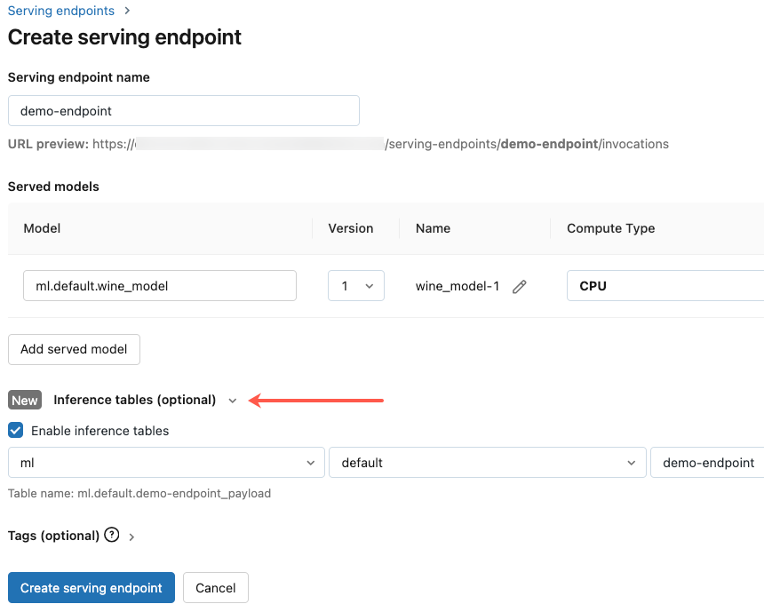

Inference tables for monitoring and debugging models
Preview
This feature is in Public Preview.
This article describes inference tables for monitoring served models. The following diagram shows a typical workflow with inference tables. The inference table automatically captures incoming requests and outgoing responses for a model serving endpoint and logs them as a Unity Catalog Delta table. You can use the data in this table to monitor, debug, and improve ML models.
What are inference tables?
Monitoring the performance of models in production workflows is an important aspect of the AI and ML model lifecycle. Inference Tables simplify monitoring and diagnostics for models by continuously logging serving request inputs and responses (predictions) from Databricks Model Serving endpoints and saving them into a Delta table in Unity Catalog. You can then use all of the capabilities of the Databricks platform, such as DBSQL queries, notebooks, and Lakehouse Monitoring to monitor, debug, and optimize your models.
You can enable inference tables on any existing or newly created model serving endpoint, and requests to that endpoint are then automatically logged to a table in UC.
Some common applications for inference tables are the following:
Monitor data and model quality. You can continuously monitor your model performance and data drift using Lakehouse Monitoring. Lakehouse Monitoring automatically generates data and model quality dashboards that you can share with stakeholders. Additionally, you can enable alerts to know when you need to retrain your model based on shifts in incoming data or reductions in model performance.
Debug production issues. Inference Tables log data like HTTP status codes, model execution times, and request and response JSON code. You can use this performance data for debugging purposes. You can also use the historical data in Inference Tables to compare model performance on historical requests.
Create a training corpus. By joining Inference Tables with ground truth labels, you can create a training corpus that you can use to re-train or fine-tune and improve your model. Using Databricks Workflows, you can set up a continuous feedback loop and automate re-training.
Requirements
Your workspace must have Unity Catalog enabled.
To enable inference tables on an endpoint both the creator of the endpoint and the modifier need the following permissions:
Can Manage permission on the endpoint.
USE CATALOGpermissions on the specified catalog.USE SCHEMApermissions on the specified schema.CREATE TABLEpermissions in the schema.
Enable and disable inference tables
This section shows you how to enable or disable inference tables using the Databricks UI. You can also use the API; see Enable inference tables on model serving endpoints using the API for instructions.
The owner of the inference tables is the user who created the endpoint. All access control lists (ACLs) on the table follow the standard Unity Catalog permissions and can be modified by the table owner.
Warning
The inference table could become corrupted if you do any of the following:
Change the table schema.
Change the table name.
Delete the table.
Lose permissions to the Unity Catalog catalog or schema.
In this case, the auto_capture_config of the endpoint status shows a FAILED state for the payload table. If this happens, you must create a new endpoint to continue using inference tables.
To enable inference tables during endpoint creation use the following steps:
Click Serving in the Databricks Machine Learning UI.
Click Create serving endpoint.
On the endpoint creation page, click the right-pointing arrow next to Inference tables (optional).
Select Enable inference tables.
In the drop-down menus, select the desired catalog and schema where you would like the table to be located.
The default table name is
<catalog>.<schema>.<endpoint-name>_payload. If desired, you can enter a custom table prefix.Click Create serving endpoint.
You can also enable inference tables on an existing endpoint. To edit an existing endpoint configuration do the following:
Navigate to your endpoint page.
Click Edit configuration.
Follow the previous instructions, starting with step 3.
When you are done, click Update serving endpoint.
Follow these instructions to disable inference tables:
Important
When you disable inference tables on an endpoint, you cannot re-enable them. To continue using inference tables, you must create a new endpoint and enable inference tables on it.
Navigate to your endpoint page.
Click Edit configuration.
Click Enable inference table to remove the checkmark.
Once you are satisfied with the endpoint specifications, click Update serving endpoint.
Workflow: Monitor model performance using inference tables
To monitor model performance using inference tables, follow these steps:
Enable inference tables on your endpoint, either during endpoint creation or by updating it afterwards.
Schedule a workflow to process the JSON payloads in the inference table by unpacking them according to the schema of the endpoint.
(Optional) Join the unpacked requests and responses with ground-truth labels to allow model quality metrics to be calculated.
Create a monitor over the resulting Delta table and refresh the metrics.
The starter notebooks implement this workflow.
Starter notebook for monitoring an inference table
The following notebook implements the steps outlined above to unpack requests from a Lakehouse Monitoring inference table. The notebook can be run on demand, or on a recurring schedule using Databricks Workflows.
Starter notebook for monitoring text quality from endpoints serving LLMs
The following notebook unpacks requests from an inference table, computes a set of text evaluation metrics (such as readability and toxicity), and enables monitoring over these metrics. The notebook can be run on demand, or on a recurring schedule using Databricks Workflows.
Query and analyze results in the inference table
After your served models are ready, all requests made to your models are logged automatically to the inference table, along with the responses. You can view the table in the UI, query the table from DBSQL or a notebook, or query the table using the REST API.
To view the table in the UI: On the endpoint page, click the name of the inference table to open the table in Catalog Explorer.
To query the table from DBSQL or a Databricks notebook: You can run code similar to the following to query the inference table.
SELECT * FROM <catalog>.<schema>.<payload_table>
If you enabled inference tables using the UI, payload_table is the table name you assigned when you created the endpoint. If you enabled inference tables using the API, payload_table is reported in the state section of the auto_capture_config response. For an example, see Enable inference tables on model serving endpoints using the API.
Unity Catalog inference table schema
Each request and response that gets logged to an inference table is written to a Delta table with the following schema:
Note
If you invoke the endpoint with a batch of inputs, the whole batch is logged as one row.
Column name |
Description |
Type |
|---|---|---|
|
A Databricks generated request identifier attached to all model serving requests. |
STRING |
|
An optional client generated request identifier that can be specified in the model serving request body. See Specify `client_request_id` for more information. |
STRING |
|
The UTC date on which the model serving request was received. |
DATE |
|
The timestamp in epoch milliseconds on when the model serving request was received. |
LONG |
|
The HTTP status code that was returned from the model. |
INT |
|
The sampling fraction used in the event that the request was down-sampled. This value is between 0 and 1, where 1 represents that 100% of incoming requests were included. |
DOUBLE |
|
The execution time in milliseconds for which the model performed inference. This does not include overhead network latencies and only represents the time it took for the model to generate predictions. |
LONG |
|
The raw request JSON body that was sent to the model serving endpoint. |
STRING |
|
The raw response JSON body that was returned by the model serving endpoint. |
STRING |
|
A map of metadata related to the model serving endpoint associated with the request. This map contains the endpoint name, model name, and model version used for your endpoint. |
MAP<STRING, STRING> |
Specify client_request_id
The client_request_id field is an optional value the user can provide in the model serving request body. This allows the user to provide their own identifier for a request that shows up in the final inference table under the client_request_id and can be used for joining your request with other tables that use the client_request_id, like ground truth label joining. To specify a client_request_id, include it at as a top level key of the request payload. If no client_request_id is specified, the value appears as null in the row corresponding to the request.
{
"client_request_id": "<user-provided-id>",
"dataframe_records": [
{
"sepal length (cm)": 5.1,
"sepal width (cm)": 3.5,
"petal length (cm)": 1.4,
"petal width (cm)": 0.2
},
{
"sepal length (cm)": 4.9,
"sepal width (cm)": 3,
"petal length (cm)": 1.4,
"petal width (cm)": 0.2
},
{
"sepal length (cm)": 4.7,
"sepal width (cm)": 3.2,
"petal length (cm)": 1.3,
"petal width (cm)": 0.2
}
]
}
The client_request_id can later be used for ground truth label joins if there are other tables that have labels associated with the client_request_id.
Limitations
Customer managed keys are not supported.
Inference Tables only work with CPU endpoints. If you are enrolled in the Model Serving GPU serving public preview, reach out to your Databricks account team for possible custom solutions.
AWS PrivateLink is not supported by default. Reach out to your Databricks account team to enable it.
When inference tables is enabled, the limit for the total max concurrency across all served models in a single endpoint is 128. Reach out to your Databricks account team to request an increase to this limit.
Inference tables do not support endpoints that host foundation models.